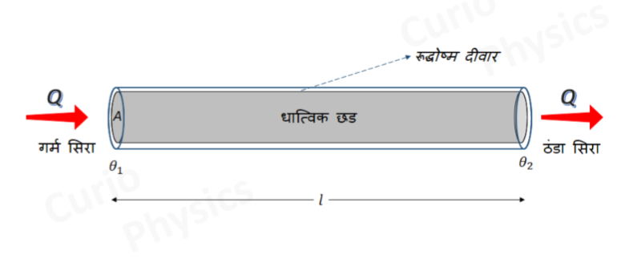
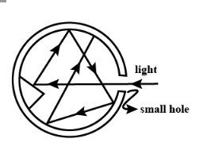
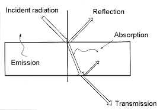

ऊष्मा संचरण की तीन विधियाँ हैं -
1. चालन (Conduction) - ऊष्मा संचरण की वह विधि जिसमें माध्यम के कण अपने स्थान से हटे बिना एक-दूसरे को ऊष्मा देते हैं, चालन कहलाती है। यह मुख्यतः ठोसों में होता है। जैसे - लोहे की छड़ का एक सिरा गर्म करने पर दूसरा सिरा भी गर्म हो जाना।
2. संवहन (Convection) - ऊष्मा संचरण की वह विधि जिसमें माध्यम के कण स्वयं एक स्थान से दूसरे स्थान पर जाकर ऊष्मा का संचरण करते हैं, संवहन कहलाती है। यह द्रवों और गैसों में होता है। जैसे - पानी को गर्म करना।
3. विकिरण (Radiation) - ऊष्मा संचरण की वह विधि जिसमें ऊष्मा संचरण के लिए किसी माध्यम की आवश्यकता नहीं होती, विकिरण कहलाती है। जैसे - सूर्य से पृथ्वी पर ऊष्मा का आना।
| क्र. | चालन | संवहन | विकिरण |
|---|---|---|---|
| 1. | इनमें कण अपना स्थान नहीं छोड़ते। | इनमें कण अपना स्थान छोड़कर दूसरे स्थान पर जाते हैं। | इनमें माध्यम की आवश्यकता नहीं होती। |
| 2. | यह मुख्यतः ठोसों में होता है। | यह द्रव व गैसों में होता है। | यह निर्वात में भी होता है। |
| 3. | यह धीमी प्रक्रिया है। | यह चालन से तेज प्रक्रिया है। | यह सबसे तेज प्रक्रिया है। |
| 4. | उदा.- लोहे की छड़ का गर्म होना। | उदा.- पानी का गर्म होना। | उदा.- सूर्य से पृथ्वी पर ऊष्मा आना। |
1. चालक (Conductor) - वे पदार्थ जिनमें ऊष्मा का चालन शीघ्रता से होता है, ऊष्मा के चालक कहलाते हैं। जैसे - लोहा, ताँबा, एल्युमिनियम।
2. कुचालक (Insulator) - वे पदार्थ जिनमें ऊष्मा का चालन नहीं होता या बहुत धीरे होता है, कुचालक कहलाते हैं। जैसे - लकड़ी, काँच, रबर।
3. चालकता (Conductivity) - किसी पदार्थ में ऊष्मा के चालन की क्षमता को उसकी ऊष्मीय चालकता कहते हैं।
| क्र. | चालक | कुचालक |
|---|---|---|
| 1. | इनमें ऊष्मा का चालन तेजी से होता है। | इनमें ऊष्मा का चालन नहीं होता या बहुत धीरे होता है। |
| 2. | इनकी ऊष्मीय चालकता अधिक होती है। | इनकी ऊष्मीय चालकता बहुत कम होती है। |
| 3. | उदा. - लोहा, ताँबा, एल्युमिनियम। | उदा. - लकड़ी, रबर, काँच। |
| 4. | इनका उपयोग बर्तन, तार आदि बनाने में होता है। | इनका उपयोग ऊष्मा-रोधक के रूप में होता है। |
परिवर्ती दशा (Variable State) - जब किसी छड़ को गर्म किया जाता है तो प्रारम्भ में छड़ के प्रत्येक भाग का ताप समय के साथ बढ़ता रहता है। ऊष्मा का कुछ भाग छड़ को गर्म करने में खर्च होता है। इस दशा को परिवर्ती दशा कहते हैं।
स्थायी दशा (Steady State) - कुछ समय बाद छड़ के प्रत्येक भाग का ताप स्थिर हो जाता है, ताप समय के साथ नहीं बढ़ता। इस दशा में छड़ द्वारा अवशोषित ऊष्मा, उत्सर्जित ऊष्मा के बराबर होती है। इसे स्थायी दशा कहते हैं।
स्थायी दशा में छड़ के किसी भी भाग का ताप नियत रहता है परन्तु अलग-अलग भागों का ताप अलग-अलग होता है।
| क्र. | परिवर्ती दशा | स्थायी दशा |
|---|---|---|
| 1. | इसमें छड़ के प्रत्येक भाग का ताप समय के साथ बढ़ता है। | इसमें प्रत्येक भाग का ताप समय के साथ स्थिर रहता है। |
| 2. | इसमें छड़ ऊष्मा का अवशोषण करती है। | इसमें अवशोषित ऊष्मा = उत्सर्जित ऊष्मा होती है। |
| 3. | यह प्रारम्भिक अवस्था है। | यह परिवर्ती दशा के बाद की अवस्था है। |
| 4. | इसमें ताप नियत नहीं होता। | इसमें प्रत्येक बिन्दु पर ताप नियत होता है। |
किसी माध्यम में समान ताप वाले बिन्दुओं से होकर गुजरने वाले पृष्ठ को समतापी पृष्ठ कहते हैं।
समतापी पृष्ठ पर स्थित सभी बिन्दुओं का ताप समान होता है। ऊष्मा का प्रवाह सदैव समतापी पृष्ठ के लम्बवत् होता है।
उदाहरण - किसी गर्म गोले के चारों ओर समान त्रिज्या का गोलीय पृष्ठ समतापी पृष्ठ होगा।
ताप प्रवणता - दो समतापी पृष्ठों के बीच की दूरी के साथ ताप परिवर्तन की दर को ताप प्रवणता कहते हैं।
ताप प्रवणता = तापान्तर / दूरी = (θ₁ - θ₂) / l
ताप प्रवणता एक सदिश राशि है, इसकी दिशा ताप घटने की दिशा में होती है। स्थायी दशा में ताप प्रवणता का मान नियत रहता है।
मात्रक - °C/मीटर या केल्विन/मीटर (K/m)
विमा - [M⁰L⁻¹T⁰K¹]

किसी समय $t$ में किसी छड़ से प्रवाहित ऊष्मा की मात्रा -
1. उसके अनुप्रस्थ काट के क्षेत्रफल के अनुक्रमानुपाती होती है।
2. दोनों सिरों के तापान्तर के अनुक्रमानुपाती होती है।
3. लिए गए समय के अनुक्रमानुपाती होती है।
4. छड़ की लम्बाई के व्युत्क्रमानुपाती होती है।
चारों को मिलाने पर -
जहाँ $K$ पदार्थ का ऊष्मा चालकता गुणांक है।
स्थायी दशा में एक मीटर लम्बी तथा एक वर्ग मीटर अनुप्रस्थ काट वाली छड़ के दो सिरों के बीच तापान्तर 1°C होने पर एक सेकण्ड में प्रवाहित ऊष्मा की मात्रा को उस पदार्थ का ऊष्मा चालकता गुणांक कहते हैं। इसे K से प्रदर्शित करते है।
$K = \frac{Q \times l}{A(\theta_1 - \theta_2)t}$
इसका SI मात्रक जूल / मीटर-सेकण्ड-°C होता है।
विमा - $[M^1 L^1 T^{-3} K^{-1}]$
चालन विधि द्वारा ऊष्मा प्रवाह में पदार्थ द्वारा उत्पन्न बाधा को ऊष्मीय प्रतिरोध कहते हैं। इसे R से प्रदर्शित करते है।
$R = \frac{(\theta_1 - \theta_2)}{Q/t} = \frac{l}{KA}$
जहाँ l = लम्बाई, A = क्षेत्रफल, K = ऊष्मा चालकता गुणांक
मात्रक - °C-sec / cal या Kelvin / Watt (K/W)
विमा - $[M^{-1}L^{-2}T^{3}K^{1}]$
ऊष्मीय प्रतिरोध, वैद्युत प्रतिरोध के तुल्य होता है। यह लम्बाई के समानुपाती तथा क्षेत्रफल व चालकता के व्युत्क्रमानुपाती होता है।
उद्देश्य - विभिन्न चालकों की ऊष्मीय चालकताओं की तुलना करना।
उपकरण - इसमें धातु का एक बर्तन होता है जिसमें कई छेद होते हैं। इन छेदों में अलग-अलग धातुओं की समान लम्बाई व मोटाई की छड़ें मोम लगाकर लगाई जाती हैं।
विधि -
1. सभी छड़ों पर समान रूप से मोम की परत चढ़ा दी जाती है।
2. बर्तन में उबलता हुआ पानी भरा जाता है।
3. छड़ों के गर्म सिरे से ऊष्मा दूसरे सिरे की ओर जाती है जिससे मोम पिघलने लगता है।
4. जिस छड़ पर मोम अधिक दूरी तक पिघलेगा, उसकी चालकता अधिक होगी।
निष्कर्ष - मोम पिघलने की लम्बाई $l \propto \sqrt{K}$ या $l^2 \propto K$
यदि $l_1, l_2$ दो छड़ों पर मोम पिघलने की लम्बाई हो तो - $\frac{K_1}{K_2} = \frac{l_1^2}{l_2^2}$
इस प्रयोग से पता चलता है कि चाँदी सबसे अच्छी चालक है।
1. एस्किमो लोग बर्फ के घर बनाते हैं क्योंकि बर्फ ऊष्मा की कुचालक होती है।
2. चाय के बर्तन की हैंडल में कुचालक पदार्थ लगाया जाता है ताकि हाथ न जले।
3. सर्दियों में ऊनी कपड़े पहने जाते हैं क्योंकि ऊन में हवा फंसी रहती है जो कुचालक होती है।
4. थर्मस में चमकदार दीवारें ऊष्मा को रोकती हैं।
5. लोहे की छड़ का एक सिरा गर्म करने पर दूसरा सिरा जल्दी गर्म हो जाता है क्योंकि लोहा सुचालक है।
उत्तर - बर्फ ऊष्मा की कुचालक होती है। दोहरी दीवार के बीच हवा फँस जाती है जो और भी कुचालक है, इससे बाहर की ठंड अंदर नहीं आती और अंदर की गर्मी बाहर नहीं जाती।
उत्तर - लकड़ी और प्लास्टिक ऊष्मा के कुचालक होते हैं। धातु का बर्तन गर्म होने पर भी हत्था गर्म नहीं होता जिससे हाथ नहीं जलता।
उत्तर - ऊन के रेशों के बीच हवा फँसी रहती है। हवा ऊष्मा की कुचालक है, इसलिए शरीर की गर्मी बाहर नहीं जाने देती और हमे गर्मी महसूस होती है।
उत्तर - थर्मस की दो दीवारों के बीच निर्वात होता है जो चालन-संवहन रोकता है और दीवारों पर चमकदार पॉलिश विकिरण रोकती है। इसलिए ऊष्मा का आदान-प्रदान नहीं होता।
उत्तर - लोहा ऊष्मा का सुचालक है। इसकी ऊष्मा चालकता अधिक होने के कारण ऊष्मा चालन विधि द्वारा एक सिरे से दूसरे सिरे तक जल्दी पहुँच जाती है।
ऊष्मीय विकिरण - ऊष्मा संचरण की वह विधि जिसमें बिना माध्यम के ऊष्मा प्रकाश के वेग से जाती है।
प्रकृति -
1. ये विद्युत चुम्बकीय तरंगें हैं।
2. तरंगदैर्ध्य 8000Å से 40000Å तक होती है।
3. ये प्रकाश के वेग से चलती हैं।
4. इनके लिए माध्यम की आवश्यकता नहीं होती।
5. ये सीधी रेखा में चलती हैं।
6. ये परावर्तन व अपवर्तन के नियमों का पालन करती हैं।
ऊष्मा पार्य (Diathermanous) - वे पदार्थ जो ऊष्मीय विकिरण को अपने में से होकर जाने देते हैं, ऊष्मा पार्य कहलाते हैं। जैसे - सेंधा नमक, काँच, वायु।
ऊष्मा अपार्य (Athermanous) - वे पदार्थ जो ऊष्मीय विकिरण को अपने में से होकर नहीं जाने देते, उसे अवशोषित कर लेते हैं, ऊष्मा अपार्य कहलाते हैं। जैसे - लकड़ी, लोहा, पानी।
ऊष्मीय विकिरण को मापने या पता लगाने वाले यंत्र को संसूचक कहते हैं।
जैसे - थर्मोपाइल और बोलोमीटर ऊष्मीय विकिरण के संसूचक हैं। ये विकिरण को अवशोषित करके उसे विद्युत संकेत या ताप वृद्धि में बदल देते हैं।
वह पिण्ड जो अपने ऊपर आपतित होने वाले सभी तरंगदैर्ध्य के विकिरणों को पूरी तरह अवशोषित कर लेता है, आदर्श कृष्ण पिण्ड कहलाता है।
इसकी अवशोषण क्षमता 1 होती है। व्यवहार में काजल से पुता हुआ पृष्ठ लगभग आदर्श कृष्ण पिण्ड माना जाता है।
काला पिण्ड गर्म करने पर सभी तरंगदैर्ध्य के विकिरण उत्सर्जित करता है।
फेरी ने आदर्श कृष्ण पिण्ड का प्रायोगिक रूप बनाया। इसमें दोहरी दीवार वाला खोखला गोला होता है जिसकी अंदर की दीवार पर काजल की परत लगी होती है और उसमें एक छोटा सा छिद्र होता है।
छिद्र पर आपतित विकिरण गोले के अंदर बार-बार परावर्तन के बाद पूरी तरह अवशोषित हो जाता है, इसलिए छिद्र आदर्श कृष्ण पिण्ड की तरह कार्य करता है।
यदि इस गोले को गर्म किया जाए तो छिद्र से सभी तरंगदैर्ध्य के विकिरण निकलते हैं।


माना किसी पृष्ठ पर आपतित कुल विकिरण ऊर्जा Q है, जिसमें से Qr परावर्तित, Qa अवशोषित और Qt पारगमित होती है।
1. परावर्तन क्षमता (r) - किसी पृष्ठ द्वारा परावर्तित विकिरण की मात्रा और आपतित कुल विकिरण की मात्रा के अनुपात को परावर्तन क्षमता कहते हैं।
r = QrQ
2. अवशोषण क्षमता (a) - किसी पृष्ठ द्वारा अवशोषित विकिरण की मात्रा और आपतित कुल विकिरण की मात्रा के अनुपात को अवशोषण क्षमता कहते हैं।
a = QaQ
3. पारगमन क्षमता (t) - किसी पृष्ठ द्वारा पारगमित विकिरण की मात्रा और आपतित कुल विकिरण की मात्रा के अनुपात को पारगमन क्षमता कहते हैं।
t = QtQ
माना $Q$ आपतित विकिरण ऊर्जा का मान है, $Q_r$ परावर्तित, $Q_a$ अवशोषित तथा $Q_t$ पारगमित भाग है, तो
दोनों पक्षों में $Q$ का भाग देने पर,
जहाँ $r$ परावर्तकता, $a$ अवशोषकता तथा $t$ पारदर्शकता है।
अपारदर्शी पिण्ड के लिए - $t = 0$ होता है, अतः
ऐसा पिण्ड जो ऊष्मा को विकिरण के रूप में उत्सर्जित करता है, विकिरक कहलाता है।
हर गर्म पिण्ड विकिरक होता है। जैसे - सूर्य, बल्ब का फिलामेंट, गर्म लोहे की गेंद।
किसी पृष्ठ के एकांक क्षेत्रफल द्वारा एक सेकण्ड में उत्सर्जित कुल विकिरण ऊर्जा को उस पृष्ठ की उत्सर्जन क्षमता कहते हैं। इसे E से प्रदर्शित करते हैं।
इसका मात्रक जूल/मीटर2 सेकण्ड या वाट/मीटर2 होता है।
कृष्ण पिण्ड के लिए उत्सर्जन क्षमता अधिकतम होती है।
इस सिद्धांत के अनुसार प्रत्येक पिण्ड हर ताप पर विकिरण का उत्सर्जन और अवशोषण करता रहता है।
जब पिण्ड का ताप परिवेश से अधिक होता है तो उत्सर्जन अधिक होता है और पिण्ड ठंडा होता है, और जब ताप कम होता है तो अवशोषण अधिक होता है और पिण्ड गर्म होता है।
जब पिण्ड का ताप परिवेश के ताप के बराबर हो जाता है तो उत्सर्जन और अवशोषण बराबर हो जाता है और विनिमय चलता रहता है।
नियत ताप पर किसी तरंगदैर्ध्य λ के लिए किसी पिण्ड की उत्सर्जन क्षमता और अवशोषण क्षमता का अनुपात नियत रहता है और वही कृष्ण पिण्ड की उत्सर्जन क्षमता के बराबर होता है। अर्थात्
निष्कर्ष - अच्छा अवशोषक ही अच्छा उत्सर्जक होता है।
वीन के विस्थापन नियम के अनुसार कृष्ण पिण्ड से उत्सर्जित अधिकतम ऊर्जा वाली तरंगदैर्ध्य उसके परम ताप के व्युत्क्रमानुपाती होती है।
λm ∝ 1 T
λm = b T
λm × T = b = नियतांक
जहाँ b = वीन नियतांक = 2.9 × 10-3 m-K
स्टीफन के नियम के अनुसार कृष्ण पिण्ड के एकांक क्षेत्रफल से प्रति सेकण्ड उत्सर्जित कुल विकिरण ऊर्जा उसके परम ताप की चतुर्थ घात के समानुपाती होती है।
E ∝ T4
E = σT4
किसी अन्य पिण्ड के लिए -
E = eσT4
जहाँ σ = स्टीफन नियतांक = 5.67 × 10-8 W/m2K4
e = उत्सर्जकता (कृष्ण पिण्ड के लिए e = 1)
स्टीफन-बोल्ट्जमैन नियम - यदि परिवेश का ताप T0 हो तो शुद्ध हानि
Enet = eσ(T4 - T04)
प्लांक के अनुसार विकिरण की ऊर्जा सतत न होकर क्वांटा के रूप में होती है और क्वांटा की ऊर्जा आवृत्ति के समानुपाती होती है।
E ∝ ν
E = hν
जहाँ h = प्लांक नियतांक है।
न्यूटन के शीतलन नियम के अनुसार किसी गर्म वस्तु के ठंडे होने की दर, वस्तु और परिवेश के तापान्तर के समानुपाती होती है, जब तापान्तर कम हो।
जहाँ $T$ = वस्तु का ताप, $T_0$ = परिवेश का ताप
सीमाएँ -
1. वस्तु और परिवेश के ताप में अंतर कम होना चाहिए।
2. परिवेश का ताप नियत रहना चाहिए।
3. यह केवल विकिरण नहीं, चालन + संवहन + विकिरण के लिए है।
4. ऊष्मा हानि केवल तापान्तर पर निर्भर होनी चाहिए।
स्टीफन के नियम से किसी वस्तु द्वारा शुद्ध ऊष्मा हानि की दर -
माना $T = T_0 + \Delta T$ जहाँ $\Delta T$ बहुत कम है।
द्विपद प्रमेय से $(1+x)^n \approx 1+nx$ जब $x << 1$
परन्तु ऊष्मा हानि से ताप गिरता है, इसलिए
उपरोक मान समीकरण (1) में रखने पर
यही न्यूटन का शीतलन नियम है। जहाँ $k = \frac{4e\sigma T_0^3}{mc}$ नियतांक है।
1. सूर्य से पृथ्वी पर ऊष्मा विकिरण द्वारा आती है।
2. सफेद कपड़े ऊष्मा का कम अवशोषण करते हैं इसलिए गर्मी में ठंडे लगते हैं, काले कपड़े अधिक अवशोषण से सर्दी में गर्म लगते हैं।
3. थर्मस में चमकदार दीवार विकिरण द्वारा ऊष्मा हानि को रोकती है।
4. बादलों वाली रात में पृथ्वी का विकिरण बादलों से परावर्तित हो जाता है इसलिए रात गर्म लगती है।
5. रेत का उत्सर्जन अधिक होने से रेगिस्तान में दिन गर्म और रात ठंडी होती है।
6. ठंड में प्राणियों को विकिरण द्वारा अधिक ऊष्मा हानि होती है इसलिए वे अधिक भोजन करते हैं।
7. पहाड़ों पर वायु विरल होने से विकिरण का अवशोषण कम होता है इसलिए गर्मियों में भी ठंडे रहते हैं।
पृथ्वी दिन में सूर्य की ऊष्मा अवशोषित करती है और रात में विकिरण द्वारा उत्सर्जित करती है। बादलों वाली रात में यह विकिरण बादलों से परावर्तित होकर पृथ्वी पर वापस आ जाता है, इसलिए बादलों वाली रात गर्म होती है।
सफेद कपड़े ऊष्मा विकिरण के बुरे अवशोषक और अच्छे परावर्तक होते हैं, इसलिए गर्मी में ठंडे लगते हैं। काले कपड़े अच्छे अवशोषक होते हैं, इसलिए सर्दी में गर्म लगते हैं।
रेत ऊष्मा की अच्छी अवशोषक और अच्छी उत्सर्जक होती है। दिन में अधिक विकिरण अवशोषित कर गर्म हो जाती है और रात में अधिक विकिरण उत्सर्जित कर ठंडी हो जाती है।
ठंड के दिनों में विकिरण द्वारा शरीर से अधिक ऊष्मा हानि होती है। इस हानि की पूर्ति के लिए प्राणियों को अधिक ऊर्जा की आवश्यकता होती है, इसलिए वे अधिक भोजन करते हैं।
पहाड़ों पर वायु विरल होती है और धूल-कण कम होते हैं, इसलिए विकिरण का अवशोषण कम होता है तथा ऊष्मा हानि अधिक होती है, अतः पहाड़ गर्मियों में भी ठंडे रहते हैं।